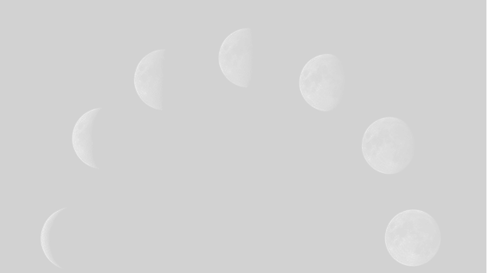

ABOUT
Moonlogue는 달에 남겨진 기억과 기록을 수집하는 감성 아카이브입니다.
신화, 과학, 예술, 상상을 넘나들며
인간과 달 사이의 서사를 기록합니다.
Myth. Science. Memory. Art. All orbiting one moon.
Moonlogue는 달에 남겨진 기억과 기록을 수집하는 감성 아카이브입니다.
신화, 과학, 예술, 상상을 넘나들며
인간과 달 사이의 서사를 기록합니다.